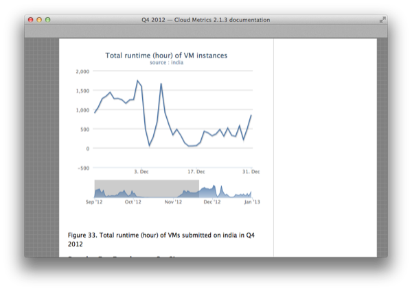

We are working on a number of development projects. Instead of just providing a single project, we decided to split the development up into smaller subprojects. This allows the groups to work independently and avoids the problem that a compile error in one code causes an issue in another. All projects listed here are managed in github.
| Image | Project | Description | Source |
|---|---|---|---|
 |
Cloudmesh Core | A project to interface easily with multiple clouds from the command line and a command shell. | github, doc |
 |
CMD3 | A dynamic CMD shell with plugins, scripts, and variables and IEEE compliant man pages | github, doc |
 |
Rain | A project to do bare metal and VM based dynamic provisioning for a HPC cluster, OpenStack, Eucalyptus. | github doc |
| Rain-Move | An extension to rain that allows to move resources between different IaaS, Bare metal, and HPC services. | github, doc | |
| Teefaa | A project to dynamically provision operating systems. | github, doc | |
|  | Cloud-Metrics | A project to measure and display metric information about usage and utilization of your cloud. | github, doc github Example |
 |
Virtual-Cluster | A project to create a SLURM based cluster in your cloud and run MPI jobs on it. | github, doc |
| Portal | A project to do develop a portal for the project | www github |
{kind=link}
{kind=link}
{kind=link}